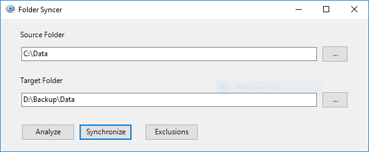

Use Case
I have a folder that I want to back up to an external drive. It has many GBs of data and it takes too long to copy the entire folder. What I need is to just copy the new and changed files to the backup location. Additionally, remove files from the backup location that no longer reside in the source.
Usage

Enter the Source Folder and Target Folder. Click the Analyze button to evaluate the contents of these folders and determine what operation will be taken for each file (no change, create, update, delete). No changes are made when you analyze the folders. Click the Synchronize button to synchronize all files and folders from the Source to the Target. Click the Exclusions button to manage folders in the Source that you do not want to synchronize.